JS13kGames 2017 making-of: LOSSST
july-september 2017
TL;DR
- This post explains in detail the development of LOSSST, and contains spoilers about the game's content. It's recommended to play the game first!
- You can play the game here: LOSSST on JS13KGAMES
- You can see all the bonuses: HERE
- You can see the game's source code here: LOSSST on GITHUB
- And don't forget to RETWEET!
- LOSSST was ranked #2 on desktop, #2 in community vote, #1 on Twitter and #1 on mobile! (out of 254 games!)
- See all the winners HERE!
Introduction
JS13kgames is certainly the most important game jam for code golfers every year, and I wouldn't miss it for any reason!
- In 2014, my game AlcheMixer was ranked 72th on desktop and our team entry Quintessence 23th on desktop and 8th on mobile!
- In 2015, my game GeoQuiz was ranked 12th on desktop and 18th in the community awards (and it's now available on all devices!).
- Last year, my game Super Chrono Portal Maker was ranked 3rd on desktop and 2nd in the community awards,
and our team entry 26 games in 1 was awarded the "super special prize", and was ranked 10th in the community awards. - All these games (and LOSSST) figure in the 500 most visited pages of JS13kGames.com since it opened!
This progression makes me want to build something even better and bigger every year!
This year, I decided to make a game that uses emoji and CSS3D, like I did for my JS1k 2017 entry Can I haz 1Karrot?. It'll be a game for desktop and mobile. I also want to include a bit of storytelling, a few cinematics and exploration phases between each gameplay session, and if possible, different ambiances. I want it to be speedrunnable. I want a WOW effect when people launch it. Also, I'll try to fill the whole 13kb with HTML, CSS and JS code only. No images, no kilobytes of binary data, only code! It'll be my biggest solo project (in terms of lines of code, hours of work and also in terms of thought) since Super Chrono Portal Maker... and maybe this year it'll be so big that I'll really have to golf it in less than 13kb at the end! That would be cool.
Preparation
Since last JS13k, I've listed a dozen game concepts on paper (mostly puzzle or reflection games, because that's the genre I like the most), and waited for this year's theme to see which idea would suit it the most...
I also worked on many CSS3D tools, techniques and prototypes, to cite a few:
- A mini Portal clone in CSS3D
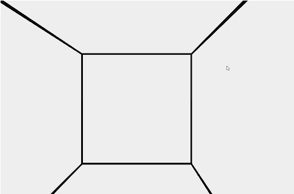 - 3D-level-editor, a CSS3D scene editor allowing to place shapes, sprites, and controlling the camera, including switching from 3D view to 2D isometric view, like in the game Fez (I live-tweeted the progress here).
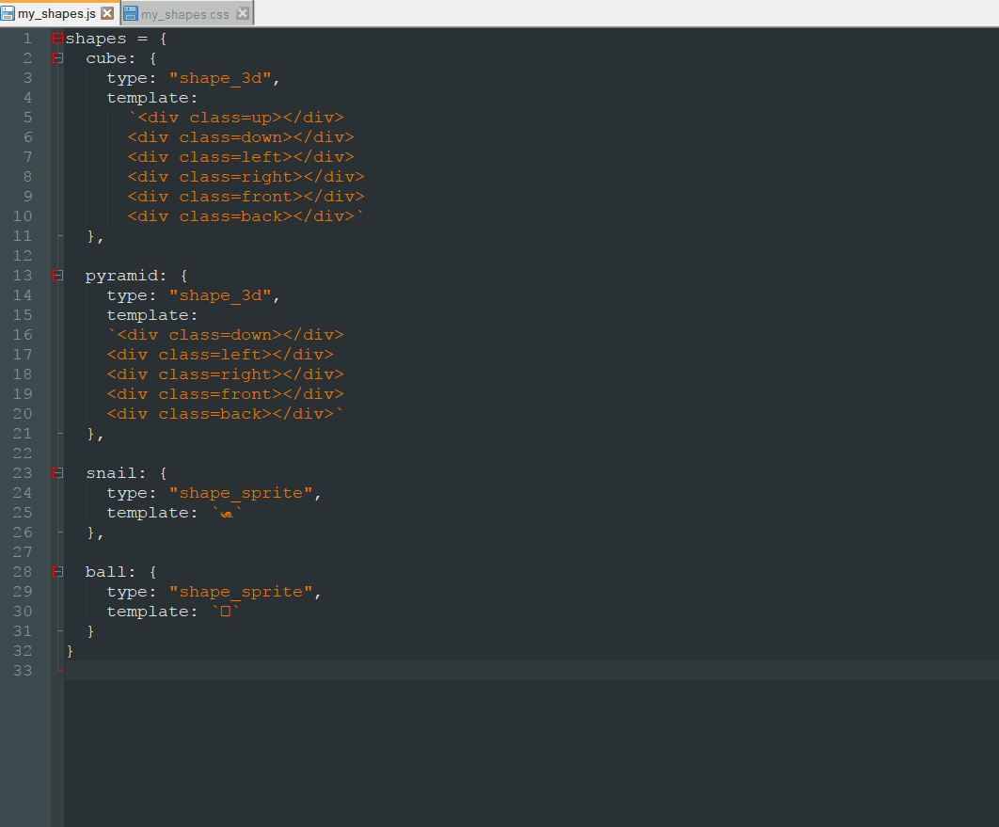 - A prototype of controllable cube in 3D (also tweeted here)
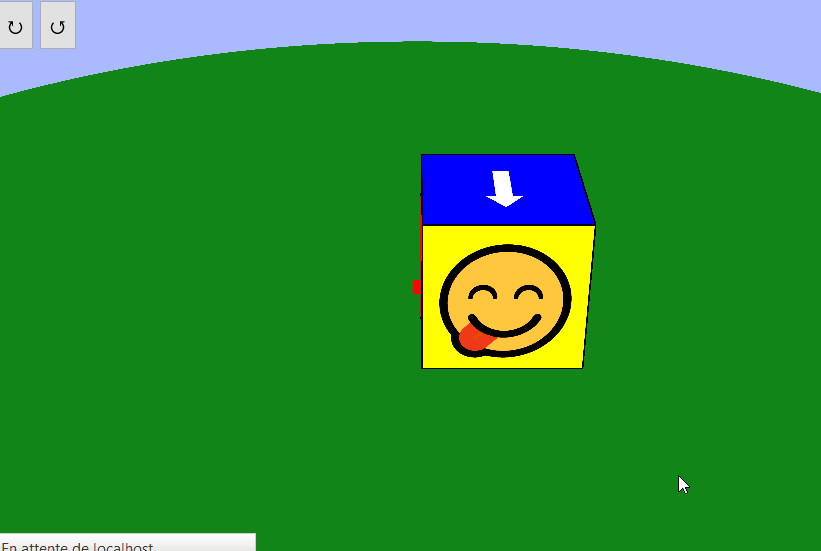 - A technique allowing to render a CSS3D cube of any size by editing a single CSS variable.
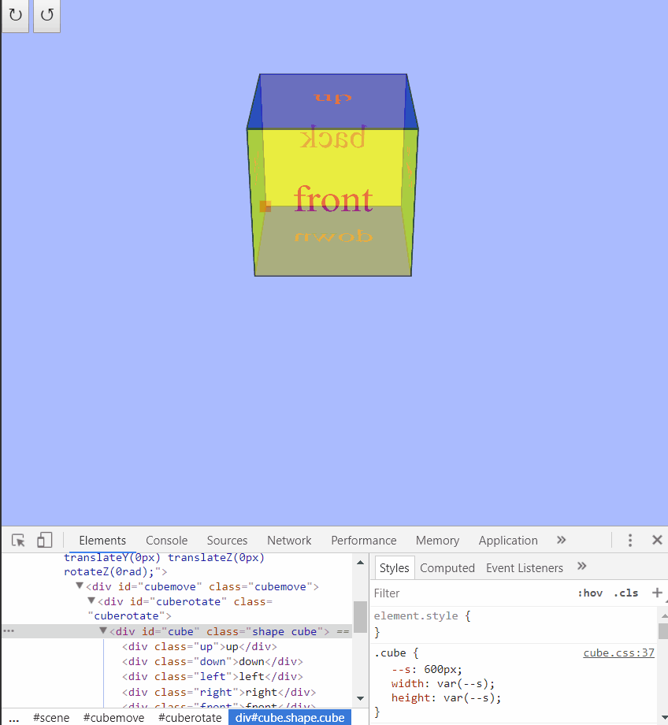
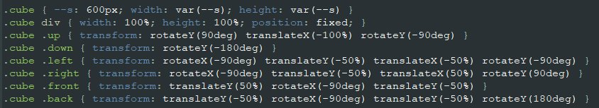
(Related: I discovered that scale(.1) is not enough to resize a CSS3D object, scaleZ(.1) is also needed) - A technique allowing to generate emoji shadows in pure CSS (based on this pen).
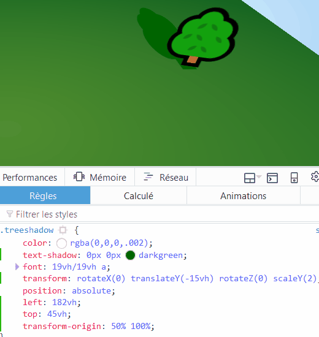 - I tweeted a sub-140b JS game framework that seems to have helped some folks to kickstart their game project this year.
- I also wrote about how to make CSS3D games in this blog post, along with these Mario Kart prototypes, and completed it with this blog post where I explain in detail the making of my JS1k entry "Can I haz 1Karrot".
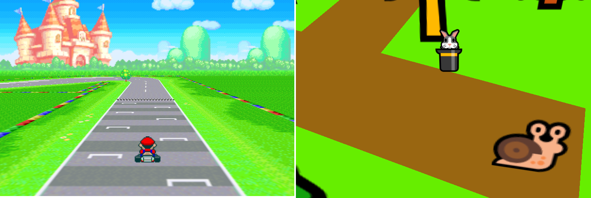 - And only 3 hours before the start of the compo, I made a tiny visual music editor that lets you draw and export any melody with a JS player as small as 150 bytes.
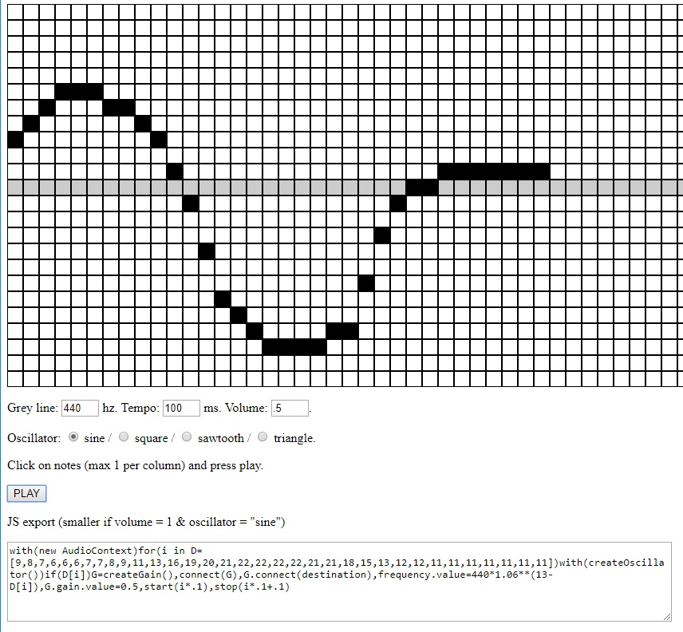
Finally, I took 2 weeks of holidays to be able to work on this entry as much as I wanted!
Week 1
The idea
When the theme was announced (Lost), I picked an idea in my list.
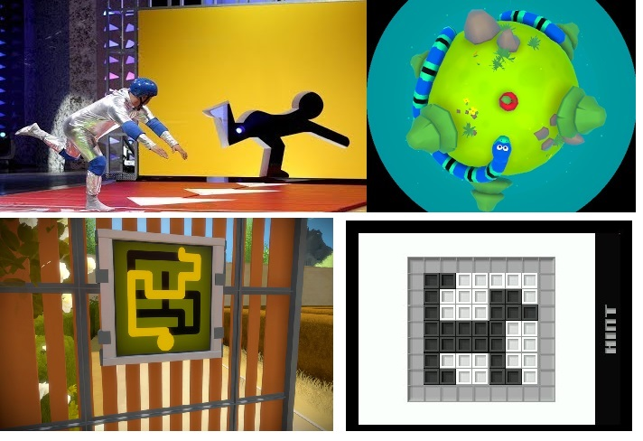It'll be a game loosely inspired by these japanese games where people need to pass through holes in moving walls.
Instead of humans, the game will feature a snake made of (CSS3D) cubes.
The 3D snake is also an hommage to this extraordinary mobile game called Snaky Snake (free on Android / iOS), and there'll be a little influence of the games The Witness and Polarium DS too (but it'll still be completely original!)
Instead of going through moving walls, the snake will enter a series of puzzles in which it has to fit more and more complex shapes, first in 2D, then with wrap-around, and finally in 3D.
I really like this concept because I've never seen it before in a video game, it's super simple to understand and use, and it allows a big variety of puzzles, from very simple to very complex.
The theme "Lost" will be part of the game's scenario: the game will be labyrinthic, and the hero (the snake) has to find his kid. I made a little intro cinematic with animated emoji eyes, but I'll need to improve it later.

Sketches!
During this week, I sketched on paper most of the game's puzzles, as well as a basic storyboard and a lot of notes. If all goes well, the game will contain about 80 puzzles and a puzzle editor.
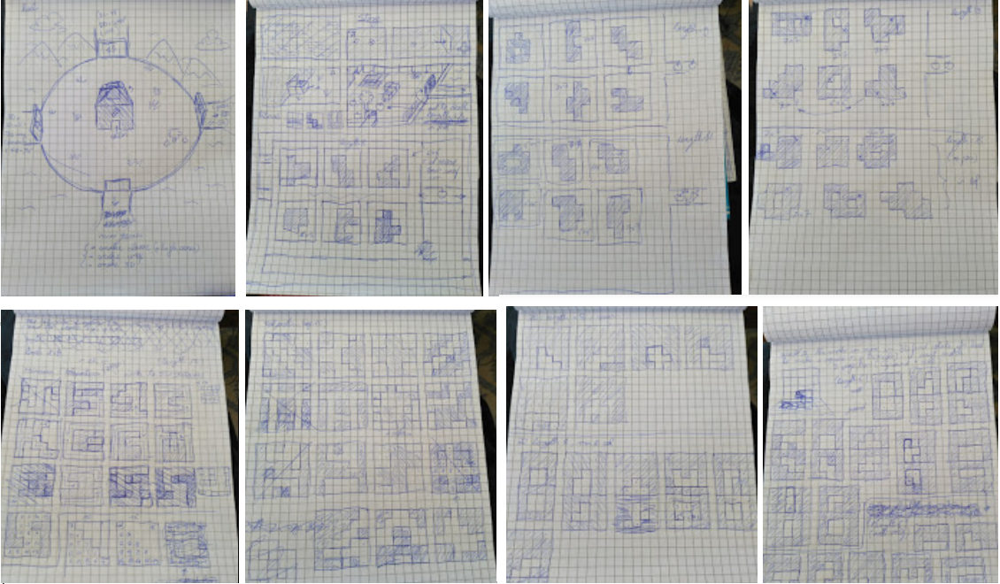
First, a puzzle editor!
During this first week, I focused on the development of a good-looking puzzle editor. The first goal of this tool is to easily create all the puzzles of the game, but also to be included as a bonus, so people can create and exchange custom levels on social networks.
It's made in HTML, all the sizes are in "vh" units to make it responsive and playable on vertical screens, and the background colors (including the sun) are made of radial gradients. The snake's shadow is made of semi-transparent squares below each cube, and its head is stylized with Unicode / Emoji characters
( Y, ‿, 👀 ).
Here's the basic feature where you can set the grid's and snake's size, draw a 2D puzzle on the ground, solve it with the arrow keys and share it as an URL:
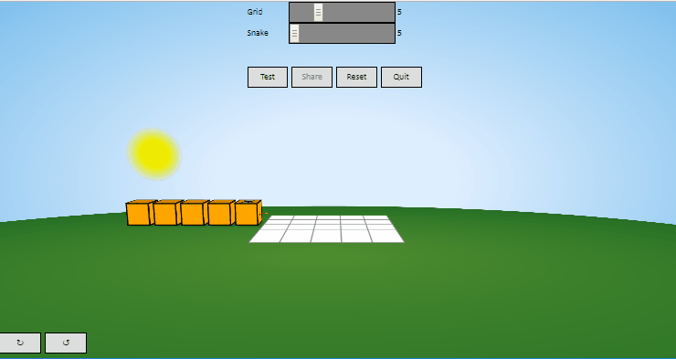
In the second group of puzzles, you can wrap from left to right and from top to bottom, a la Pac-Man:
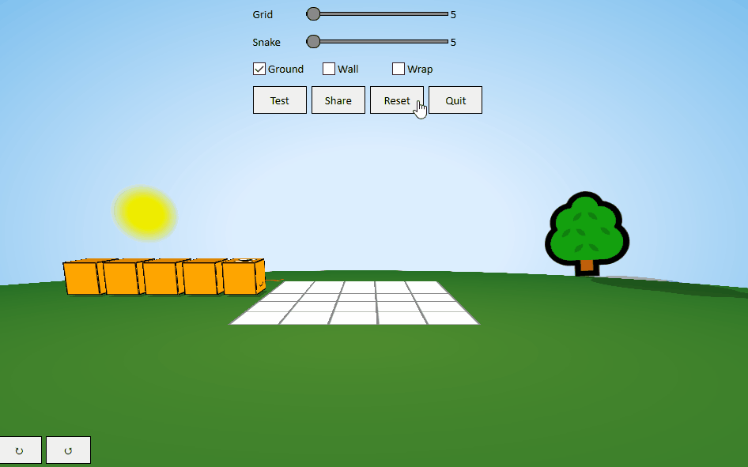
In the last group of puzzles, you can move in the 3 dimensions, first to reproduce patterns drawn on the vertical wall:
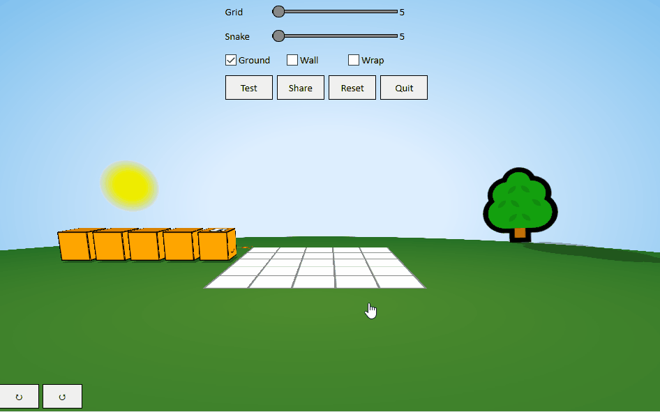
Then you must match both grids (the wall and the ground) in 3D:
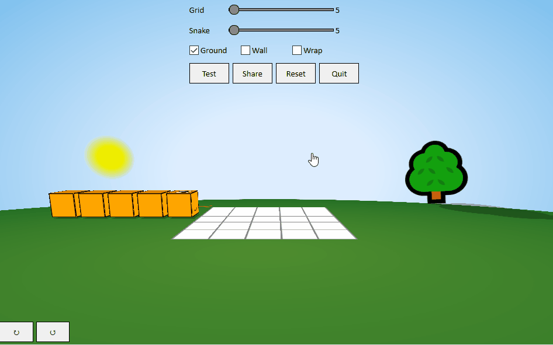
And at the end, you have to match both grids, in 3D, and with wraps:
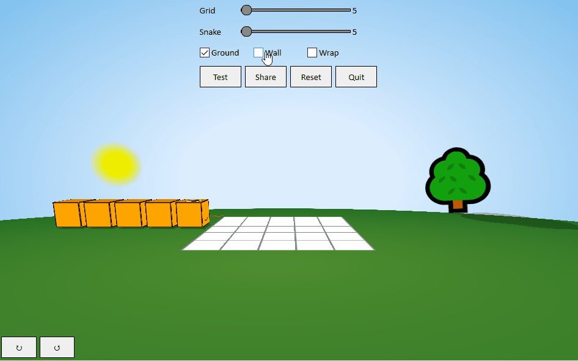
The checkboxes interactions (to enable or disable the ground, the wall or the wraps) are made in pure CSS, with rules like that:
/* Hide all cells */
.cell {
opacity: 0;
}
/* Show ground/wall cells if ground/wall checkboxes are enabled */
#ground:checked ~ .puzzle .cell,
#wall:checked ~ .puzzle .cell {
opacity: 1;
}
/* Show wrap surfaces if wrap checkbox is enabled */
#wrap:checked ~ .puzzle .wrap > div {
background: rgba(200,200,200,.25);
}
Wrap surfaces have the CSS property pointer-events: none, allowing to draw the puzzles even if they're in the middle.
As you can see in the previous images, I also implemented more boring (but essential) things, like:
- The ability to resize the grid and the snake, edit/test the puzzle, reset everything and export the puzzle as an url. (Ex: "http://(game-url)/#5,5,1,,1000010000111001110011111"). Hopefully this compact notation will allow to include all the built-in levels in the game files...
- when playing, the cells coloring in red and green according to the movements of the snake, and many tests are performed to check if a puzzle is solved,
- the collision checks to avoid going in a place that already contains a snake's cube (but allow to take the place of the very last cube, because when the head of the snake will move there, the last cube will move away, freeing that spot!),
- prevent the 3D snake from going below the ground (unless the wrap is enabled of course, because that actually makes it go upward),
- disable keyboard inputs during the snake's transition,
- and enable warping only for the cubes that try to get out of the puzzle, but not on the cubes that haven't entered the puzzle yet.
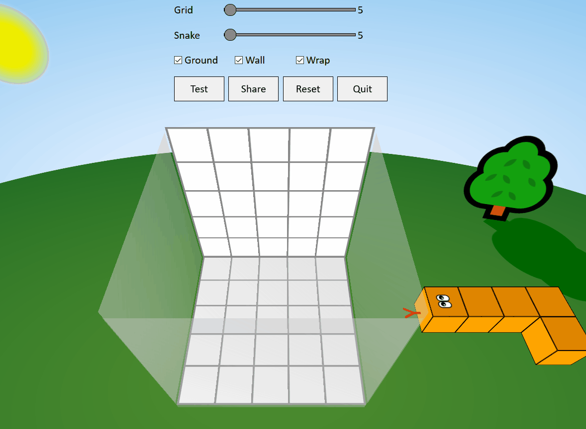Screw you, Firefox!
The most complicated task this week has been to debug Firefox. Firefox (on desktop) is super bad with CSS3D. It got a bit better in april 2017 by allowing more than 100 CSS3D elements to appear at the same time in a page, but they still haven't fixed (and they may never fix) their z-ordering and CSS3D intersections (as you can see here).
I spent hours ordering and reordering the elements in my page to have the best result possible, and added little offsets everywhere to ensure that two shapes never intersect each other. This fixed the most important problems (for example in that gif), but there are still a lot of glitches that I can't fix yet, like the cube's faces that behave normally when the "camera" moves, and disappear randomly as soon as the scene is still:
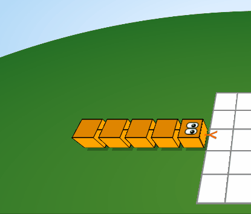
But in general, in order to have the best result possible (at least on Firefox), the secret is to organize your DOM such as the first elements hide the last ones, or appear in front of them. Sort of doing the z-ordering manually.
I also noticed that most of the glitches that remain on Firefox disappear when my browser is not in fullscreen. Weird.
Anyway, on Webkit it's perfect, so let's stop losing time on this issue for now, there's a game to make!
As in every big project, it took me quite a lot of time to find a good way to organize my code and my files to work properly. At the end of the first week, everything is still chaotic...
Anyway, the byte count is currently 19.5kb (commented and uncompressed), and only 3.4kb (not golfed, but minified and zipped).
At first I thought BabelJS (and its Babili/ES2017 presets) was the new Holy Grail of JS minification, but no! The slow and ugly Google Closure compiler, even if it outputs only ES5 code, is still the best compressor for JS code out there! (its output is around 3% smaller than BabelJS's, and ES5 ensures a better compatibility with older or bad browsers, like the ones on iOS, so it's win-win)
I also thought of a few melodies that may be played in the different sections of the game. We'll see that later.
Week 2
Let's start by fixing a few boring details. First, the controls. I've tried many configuration and finally implemented the one that seems the most natural: arrow keys to move forward, backward, left and right (relative to the camera), shift to go upward, ctrl to go downward. I won't provide a way to just "look up", "look down" like in the moving cube prototype. On mobile, there will be buttons on the screen to simulate these 6 keys.
Another important fix is to make the wraps much clearer visually. Instead of transitioning to the other side of the level, the cubes can now leave the level, disappear, reappear on the other side, and then transition to the right place. Easier said than done, it took me an entire day and a headache to get this result:
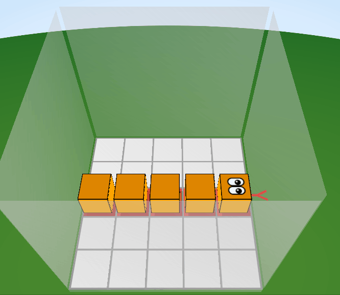
The code used to do this animation is super dirty but it'll be rewritten many times during the compo.
And while we're talking of little details, don't forget to hide the snake's shadows when its cubes are not touching the ground!
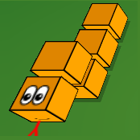
The hub (and screw you, Chrome!)
Instead of making a game containing only a list of puzzles, I decided to make a "hub", a big room where the game starts and from which the character (the snake) can evolve and access all the puzzles, editor, etc. Though, I soon realized that this hub can't be too big, because on my computer, Chrome crops the backgrounds of CSS3D elements when they exceed a size of about 32k pixels squared. (Ex: this green div measures 900vh * 900vh, and these circles are placed at its center. Chrome seems to crop everything that exceeds ~6500px in width and height). 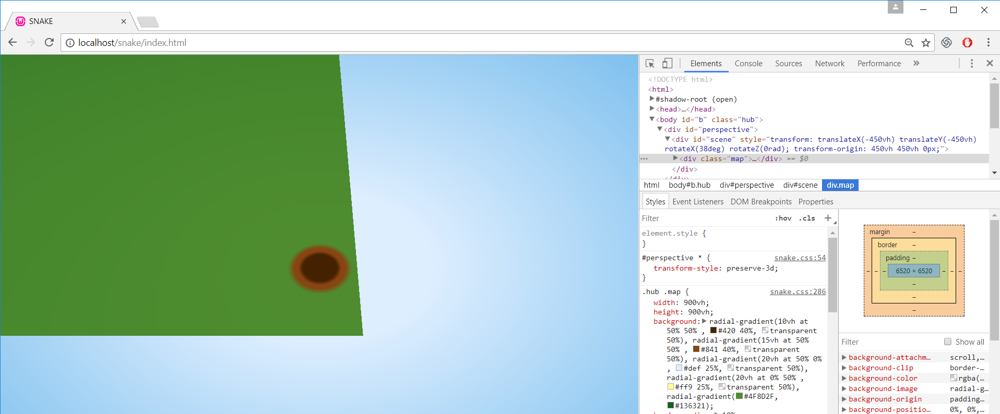
There's another issue I encountered on Chrome on my laptop: localStorage becomes locked (impossible to read or write) when my PC gets back from hibernation mode. It took me a while to understand that. I searched a bug in my code for a long time, and finally everything got back to normal when I closed and restarted Chrome. (NB: closing a tab is not enough to fix that. All chrome tabs must be killed!)
A last issue specific to Chrome Windows (that I already encountered during JS1k) is that the emoji lose their fill colors when they exceed a certain computed size in pixels. Here, the sizes are in vh, so if I have a screen too big, or a zoom too important, they can glitch quite randomly when the window is resized:
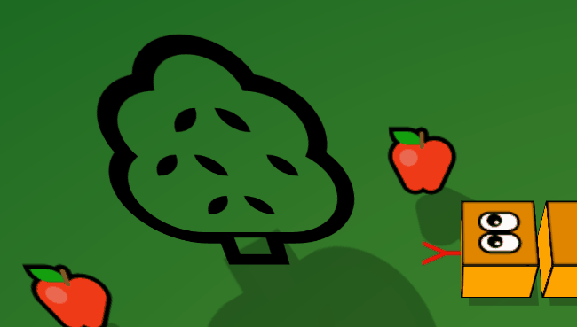
On Mac it's even worse, the trees don't appear at all:
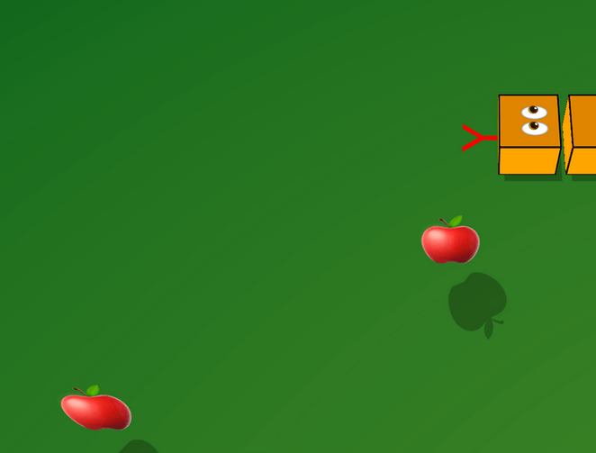
During all the month of the jam, I semi-fixed these issues as well as I could, by changing the camera's zoom, angle, perspective, and by making the trees smaller, but there was no miracle solution... until the very last days! We'll talk about it later.
An important refactoring allowed me to use the same code for controlling the snake in the editor's tests and the "real" game.
The main difference with the puzzle editor is that here, the snake first gets out of the ground, can move but doesn't have a puzzle to solve (yet), and the camera must follow it around the scene.
I rewrote the code of the trees and tree shadows to appear at precise coordinates and with solid hitboxes. The trees are slightly slanted backward from the camera (when I first used this trick, I discovered it was also used in Super Mario 64!).
I also added a few custom transitions and timeouts on the scene and the snake's head to make a mini opening cinematic. Here's a first preview (with camera rotations to show how the trees are tilted backward):

Eat apples, grow longer, and move back!
The snake will have to eat apples to get longer, and thus, solve more and more difficult puzzles. But by doing so, two issues become apparent:
- If a cube is added at the tail of the snake, where should it be placed?
- If the snake reaches a length of 9 cubes or more, how can we avoid it to get stuck like that?
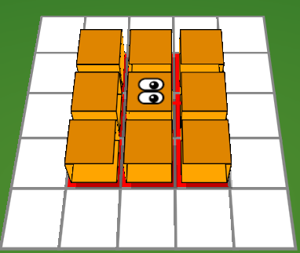
There's a single answer to these two issues: I have to record all the positions of the snake's head since the beginning of the game. By doing so, I can place any new cube where the tail was one move ago, and add a button (Alt ot backspace) to let the snake get back to any previous position when it's stuck.
Here's the result after one day of refactoring:
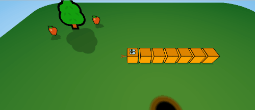
Side note: my error messages are still very stylish in CSS3D!
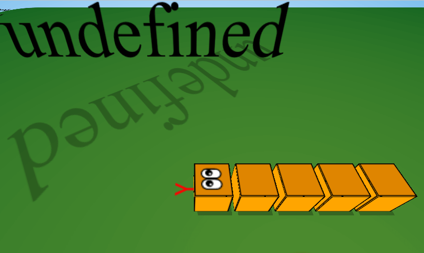
It took me a long time to wonder if a collision between the head and the tail could occur when the snake goes back to a previous position, or when it eats an apple. Turns out, it can't happen. Believe me, I tried hard!
Doors, rooms... and autosaves?
To ease the progression of the player, I wanted to implement doors and paths to travel from a room to another. The doors will open if the snake approaches it with a sufficient length, or if it has solved all the puzzles in the room.
The tests (in JS) and animations (in CSS) to open the door were pretty easy (even it it had to be rewritten a few times to work correctly in the four directions), and going in a new room simply consists of loading a different HTML page, but this feature still required a big refactoring to maintain the snake's length and all the doors and apples states when we travel between rooms, and to make the snake spawn at the right place in the new room every time it goes through a door. All these pieces of data are stored in the browser's localStorage. This has the advantage to be persistent between pages, but it also constitutes an automatic save and load feature for when the player quits the game and relaunches it later.
I actually didn't intend to implement autosave/autoload so soon, nor to implement it like that, but this use of localStorage brought it very naturally and basically for free. Awesome!
After a big effort of refactoring, each room just needs to declare the positions and behaviors of its emoji (trees, apples, ...), doors, paths and puzzles, and the game's engine will just do the rest.
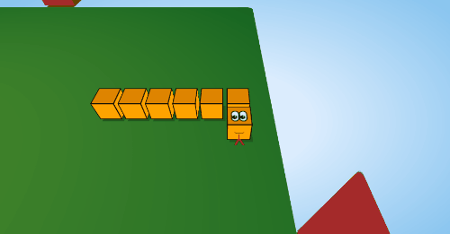
Well... after thinking about it a little, loading a different HTML page for each room turned out to be kinda dirty, and caused two issues: when the player loads his/her save data, he/she will land on index.html (the hub), instead of the last visited room. And the other issue is for the music: it'll stop playing and restart from start when the page changes, and I don't want that. So instead of loading a different page when the snake goes through a door, I prefer to reset and redraw everything in the same page (index.html). This page will load the hub by default, or the last visited room if it's saved in localStorage, but it will never reset the music. As a bonus, having a single, generic HTML page saves some hundred bytes in total!
This refactoring wasn't as easy as I thought. At some point, when I passed a door, the result was a mix of the last room and the new room!
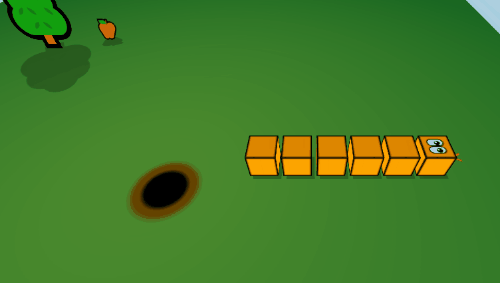
But this was fixed quickly (I forgot to empty the objects container before drawing a new room). And with this new organization, I also have camera transitions from a room to the other for free. Cool!
The first 2D puzzles
A new challenge appears: display many puzzles in a room and let the player solve them in any order. Moreover, the camera must focus on the puzzle's grid while the snake is inside, and the game engine must show the solved state of every puzzle and save it in localStorage (in order to avoid solving a puzzle multiple times). Finally, the snake can leave a puzzle before it finishes solving it.
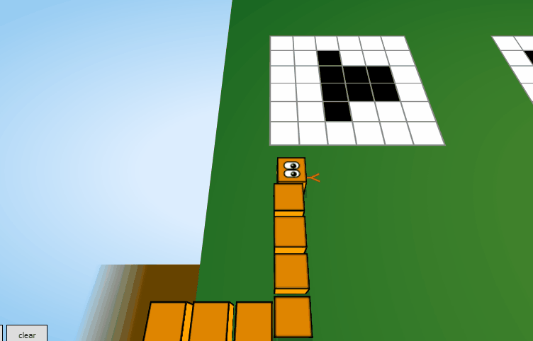
I finished this week by adding apples animations, higher platforms, and explaining how to backtrack and open doors in the hub:

I'm quite happy with this little effect: the platform on the left is not rectangular: it's made of many little cubes, but each cube has a computed background and background-position, which gives an homogeneous radial gradient to the whole surface:
(The performance on Firefox is so terrible that I only kept a little portion of the platform in the final game, but it still has this fancy radial gradient!)
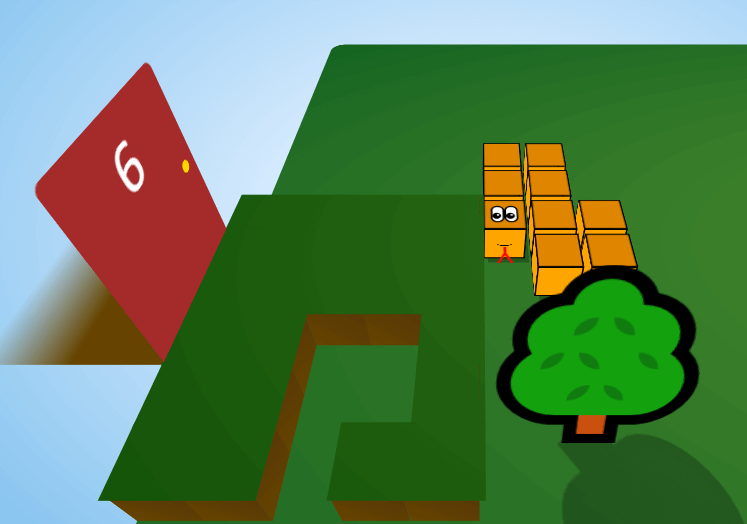
Current progress: 1783 lines of code, 45.6kb uncompressed and commented, 7.19kb minified and zipped.
Week 3
All the 2D puzzles!
After showing the game to two friends, I realized that my 2D puzzles were quite easy and risked to be annoying. So when I made the three other 2D puzzle rooms, I discarded most of my original puzzles designs and replaced them with most difficult ones.
I originally planned to have 4 x 6 2D puzzles, but to spice things up a little, I removed a room completely, and made more apples appear before each new room, which makes six 2D puzzles for a snake of length 8, six for length 11 and six for length 13. I also added cubes here and there to make the puzzles solutions less obvious.
The rooms are arranged in circle to easily return to the hub when they're completed.
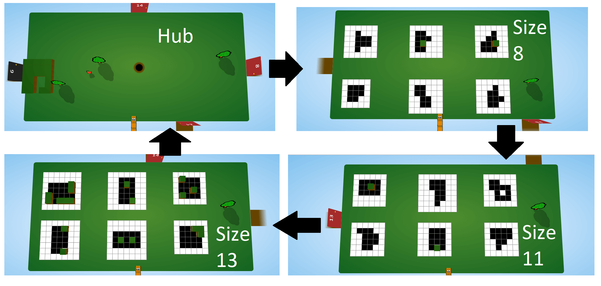
I threw away a lot of puzzles, but for a good cause: I want the players (and the judges) to quickly discover the two other sections of the game!
Budget-wise, I'm quite happy that these 3 rooms and 18 puzzles only add 600b to my zip (even though they add nearly 4kb in the source code). Of course they need more decoration but it's alredy a nice compression.
Cleanup!
To continue coding in good conditions, let's clean up all the dead/bad code that piled up during the last two weeks, and organize it such as all the variables names get automatically reduced to 1 char when passed into Closure Compiler.
This cleanup made the project much cleaner, and made the zip 1kb smaller! Yay!
God mode!
When you make a game with a long intro and progression, you quickly get annoyed when you have to replay from the beginning to arrive at a certain point. In that case I highly recommend to create a "god mode": a secret menu containing shortcuts to different places or states in the game. Here's mine:

Adding these shortcuts to load each room with the corresponding snake length, and buttons to rotate the camera or erase all saved data took only a few minutes and really changed my life!
Hints
Some beta-testers are very confused about the gameplay (how to backtrack, how apples/doors/puzzles work, etc...), so let's take some time to add hints explaining how the game works. These signboards only appear when the snake has a given size, allowing to display different messages at the start of the game, and later.
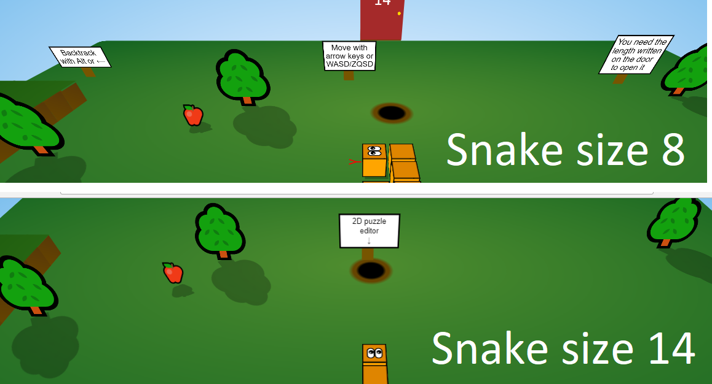
When I added these hints in the game, I realized something with CSS3D sprites (eg. the trees, and apples, and now the hints). They won't appear at the right place if you set this in their CSS: (imagine that W, H, L and T represent respectively a width, a height, a left offset and a top offset in vh)
width: W;
height: H;
left: L;
top: T;
transform-origin: 50% 100%;
transform: rotateX(-90deg);This doesn't work fine because the "top" property will set an Y offset to the top of the sprite before it's rotated along the X axis. After fiddling a little, I discovered that the good way to do it is:
width: W;
height: H;
left: L;
bottom: 0;
transform-origin: 50% 100%;
transform: translateY(T) rotateX(-90deg);When you do it this way, the point at the bottom center of the sprite is moved at the exact coordinates L:T in the scene, thanks to the "bottom: 0" that makes it start exactly from the top of the scene!
Access to the editor
Now that the 2D puzzles are done, the hub allows to access the puzzle editor to make other 2D puzzles. (wraps and 3D options are hidden for now.)

The wrap area
The second area of the game contains all the 2D puzzles with wrap, and are playable with a snake of length 14, then 15, then 16 then 20.
It starts with a little hub explaining the principle of the wrap: a wall blocks the way and a puzzle with shiny sides invites the player to follow the black path and arrive to the other side.
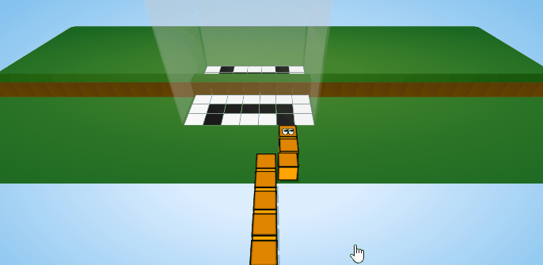
Everyone likes this tutorial puzzle. It shows with extreme simplicity how wraps work, and also brings a little "wow" effect.
One particularity of the wrap puzzles is that the snake is trapped inside the shiny walls until it solves the puzzles. It can also backtrack many times to return to a place out of the puzzle, but beta testers told me they wanted to reset a puzzle entirely instead of backtracking, so I added a reset feature when we press the key "R".
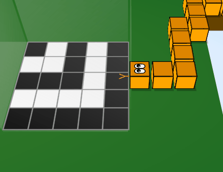
The snake can then go into a room containing 12 puzzles. The first room was very complicated to design because its puzzles form a big easter egg, that I won't spoil here. With the help of the beta-testers, I managed to enhance the puzzles and optimize this room so that the easter-egg is more easy to see. If you already saw it, you can see a before/after picture here, and the final version with extra highlight here. It's indeed much clearer like that!
Then, there are just 2 puzzles of size 16 and 2 puzzles of size 20, because of a sudden lack of ideas. I spent hours trying to design other puzzles for these rooms but all of them were too easy or didn't have a solution, so it's a sign that it's time to move to something else!
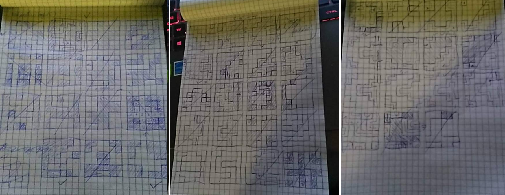
When these rooms are completed, the puzzle editor gets a new option to draw 2D wrap puzzles.
However, beta tests showed that the difficulty curve was too steep between the tutorial and the 12 first wrap puzzles, so I added an extra room with 4 "easy" wrap puzzles, just after the tutorial, and it seems to be very helpful indeed.
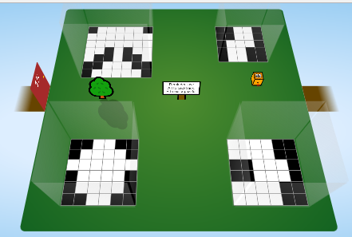
So let's start the final part of the game!
Preparing for the 3D puzzles
The 3D puzzles require a new ability (move up and down), and less cubes (at least 6). But our current snake is now 21 cubes long and doesn't have the ability to move up and down. So it's the good time to find the lost kid snake, that will solve the last puzzles, in 3D. The switch has been quite complex to implement, but it's done!
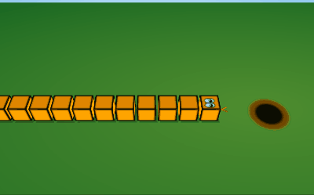
Basically, the orange snake becomes a pile of immobile CSS3D cubes (but keeps its hitboxes by having all its cubes' coordinates added to the list of ground cubes), a flag (called "son") is set to true, all the snake's data structures are reset, and the function that resets the snake is called. This function is modified to create a new snake, and let the player control it when the "son" flag is set to 1. The flag is also saved in localStorage, to let the player continue playing with this snake when a savefile is loaded.
Gravity
Our little snake can go up and down, but it must not fly! So I added a big bunch of code to test if all the parts of the snake are on the floor or on a cube, and if they're not, all the snake's cubes get instantly lowered.
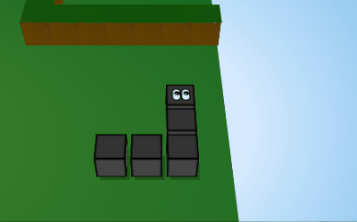
If the snake backtracks just after being lowered by the gravity, some of its parts can glitch a little because their "history" has been rewritten, but I won't fix that, it's too complex. Let's say it's an hommage to last year's "glitch" theme...
Fast-forward a few days: this gravity system caused me a big headache in a particular edge case that has some chances to happen during a normal gameplay: when the snake is entering a 3D puzzle by the top side, and falls inside the puzzle because it's not tall enough, and if we press R to quit the puzzle, the snake gets stuck in an infinite loop of quitting the puzzle and falling inside it, and it can't move anymore. Eventually, my (dirty) fix was to put a try/catch around the falling code and if it detects an infinite loop, the game rollbacks for a number of moves equal to the snake's size. It'll generally land a few steps before the entrance of the puzzle and won't be stuck anymore. And besides a little freeze, the result is practically unnoticeable! Ex:
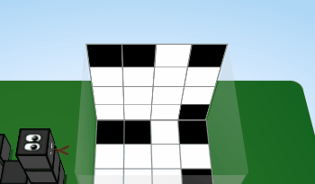
And that's the end of week 3!
Current progress: 39 puzzles, 2448 lines of code, 63.3kb uncompressed and commented, 8.49kb minified and zipped.
A word from my fellow musician Anders Kaare maybe?...
"I'm really busy at the moment (secret project!) but if I can write the music as quickly as usual I can probably squeeze you in :)"
A hypothetical music for the very last days of the compo, just like the previous years :D ... Quite scary!
Week 4
The 3D area
The 3D puzzles, that must be solved with the little snake, required a few days to design (designing 2D puzzles was hard, but designing 3D puzzles is super hard!). And yes, still on paper, because I'm more inspired when I'm outside.
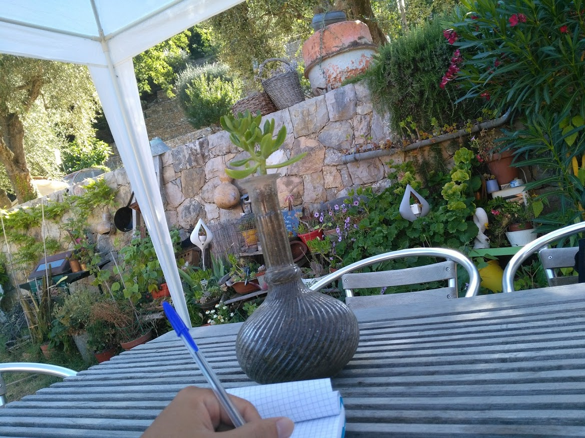
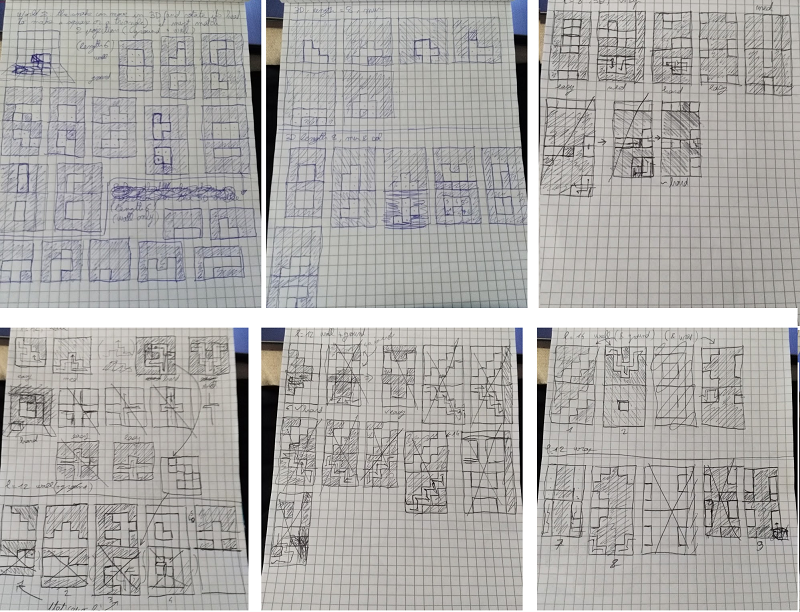
In the end there will be about 40 of them, including wall-only puzzles, wall+ground puzzles and wall+ground+wrap puzzles, for a snake of length 6 to length 20. This represent a half of the game! But the first ones are very easy, to avoid discouraging the players (but some of them will be cut and included in the game's bonus, to avoid annoying people too much). Here's how the 3D rooms look like (wip pictures):
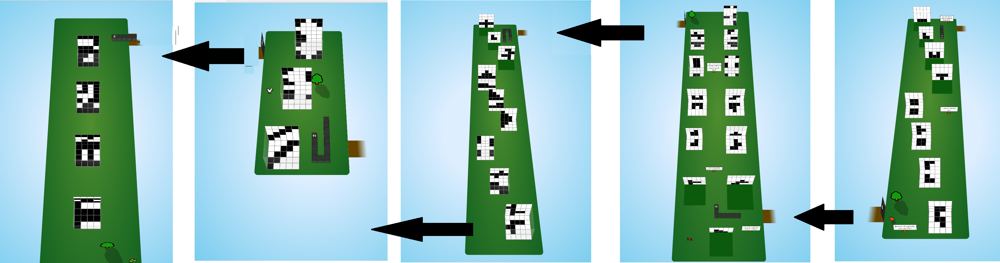
By chance, all these new levels compress very well and as far as I tested, they won't add much more than 1kb in my zip. So, plenty of room left for the rest!
I designed the last room with a final easter egg, and developped the end cinematic at the same time. (Here's a gif: spoiler! don't click before playing the game!).
{kind=link}
Final puzzle editor
After all these puzzles are completed, the final puzzle editor is finally available for the player. I made a few arrangements to make the snake black and able to go up and down only if the vertical wall is enabled, and orange otherwise.
I also prevented the snake from going through the vertical wall of the 3D puzzles, except if the wrap is enabled.
Finally, I ensured that the editor stays fully unlocked even if the players start a new game.
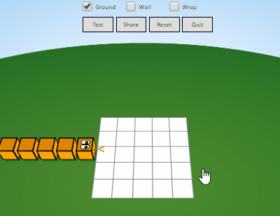
It's also time to add a level loader and a dedicated room for player-created levels. This room reminds the controls to the player and has a path to return to the "real" game. (wip: the design was simplified before release)
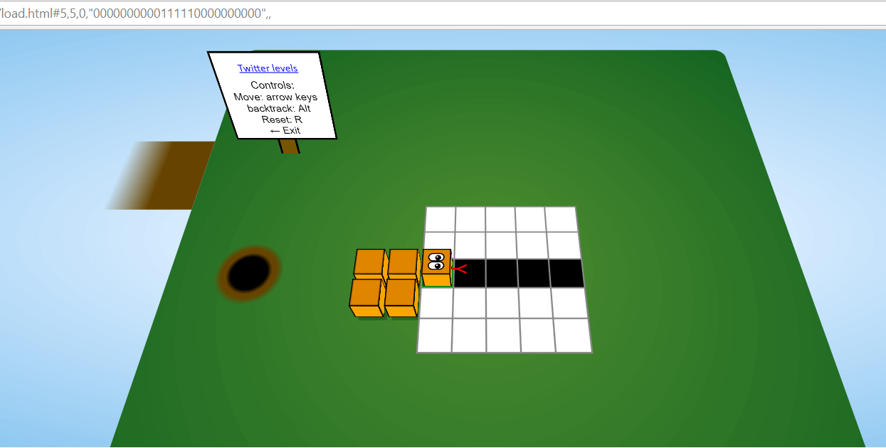
Unexpected fun with boolean golfing
While I was working on the last puzzle editor and hints improvements, I happened to write two interesting tests, which I had fun trying to simplify with a friend. They looked like this:
if((f && mousedown) || !f){ ... }
if((son && hints[i][5]) || (!son && !hints[i][5])){ ... }Which can be simplified to:
if((A & B) || !A) { ... }
if((A & B) || (!A && !B) { ... }For the first one we had no idea, but we drew a truth table before realizing that if A is false, it's okay, and otherwise it's necessarily true so we don't have to repeat it when we test B. So, the golfed version is:
if(!A || B){ ... }For the second one, it was a bit harder. When we drew the truth table, nothing was obvious, except that it was basically the opposite of a XOR. So I tried an assumption: what if it was a XAND? After a quick check on Stack Overflow, it appeared that there's actually no such thing as "XAND" (ha ha! silly me), and what we were looking for was actually a NXOR. Hey, not far! How to do a NXOR in JS, you ask? Easy!
if(!(A ^ B)){ ... }That was a fun pause! Let's go back to work.
Final name
One idea of title for the game was "pattern-alism", referencing both the patterns constituting the puzzles, and the fact that the father snake must find his son. But it's too complicated.
I wanted to find a pun like "Lost in translations" as a reference to all the CSS3D translate's in my code, or "SNAKE un au-revoir", but they would have been too much geeky/private jokes, so let's go with LOSSST instead.
At least it respects the theme, and it's a reference to the snakes in the game!
Main menu, mobile controls... and screw you, localStorage!
I had honestly no big inspiration fot the title screen so I made something with an exaggerated 3D rotation and a solid text-shadow as a wink to the TV show "LOST".
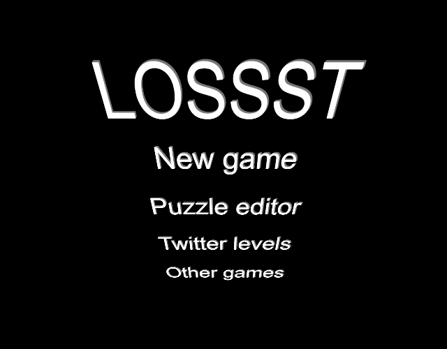
It took a few days to have the main menu and mobile controls work properly, and to adapt all the signposts to the device used (keyboard for desktop, buttons for mobile).
Here are some traps that made me lose quite a lot of time:
- Disable pinch-zoom, and other history-related touch events, with this meta tag:
<meta name=viewport content="width=device-width, user-scalable=no">Disable tap-highlight (making the whole screen blue after each touch event) with the help of a bunch of annoying CSS rules: * { -webkit-touch-callout: none; -webkit-user-select: none; -moz-user-select: none; user-select: none; -webkit-tap-highlight-color: rgba(0,0,0,0); /* old webkit hack */ -webkit-tap-highlight-color: transparent; /* new webkit hack */ }- Mobile fullscreen: with the help of Twitter friends, I found a way to do it, but finally I abandoned the idea of forcing fullscreen display on mobile because of the lack of iOS support for the fullscreen API, and the need to save bytes.
- localStorage does not write or delete entries instantly. If you create or delete a localStorage key, always have local variables updated at the same time, because when you need them later, localStorage may not have updated itself yet, and there are chances it won't contain what you think it contains.
- When you press a button on mobile, there's no recurrent event being fired, telling you that the button is still being pressed, contrary to keyboard keys, firing keypress events all the time. To make long presses on directional buttons behave like long presses on real keys, the trick is to start a setInterval on touchstart, calling the desired function at each loop, and stop it on touchend. But on touchend, it must be stopped after a certain delay, or else it won't loop once if you just tap quiclky the button! And finally, to avoid having many uncancellable intervals by tapping the buttons too fast, we have to cancel any previous loop when a button is touched. Here's how it looks in my code (pro tip: touchstart and touchend trigger the real keyboard events):
touchstart = (n) => { // Cancel previous loop (if any) if(touchintervals[n])clearInterval(touchintervals[n]); // call onkeydown immediately onkeydown({which:"+n+"}); // And loop every 150ms touchintervals[n] = setInterval("onkeydown({which:"+n+"})",150); }; touchend = (n) => { // Clear loop after 150ms setTimeout("clearInterval(touchintervals["+n+"]);onkeyup()",150); }
The mobile mode has quite a lot of buttons (to move in all directions, backtrack, exit puzzles and move the camera), but to avoid shocking the player with this ton of buttons, I made them appear progressively, when the player reaches a zone where these buttons become necessary.
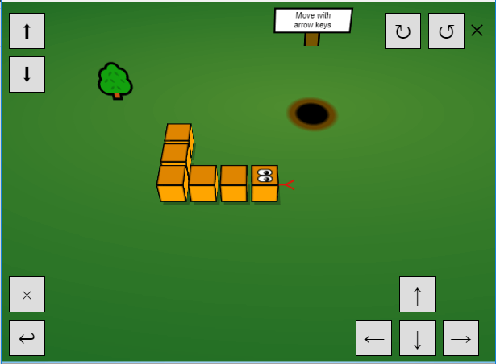
OCD challenges
For OCD players, I added a move counter and a time counter, that are able to save and resume their states when the game is played in multiple sessions. The players are invited to beat my best scores and create puzzles when they finish the game
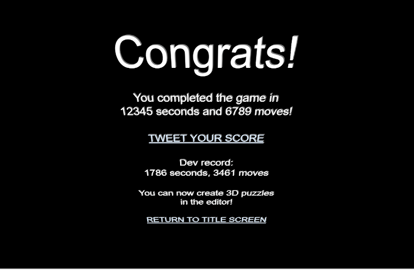
Current zip size: 18.5kb. WHAAAAT? After a few hours stressfully wondering how to lose weight, and make room for the music, I realized I had actually zipped my minified JS plus my unnecessary, unminified JS. Without that dumb mistake, the zip is below 11.5kb. Oof!
Beta-test
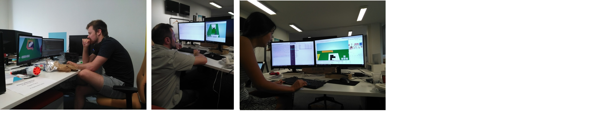
This year I have the chance to have a lot of volunteers for testing my game. I gathered a lot of feedback by watching them play IRL, or by interviewing them when they live in other countries.
- Tommy Hodgins
- Adrien Guéret
- Julien Laville
- Odilon Ghedin
- Vincent Vidal
- Lucas Dupuy
- Victoire Yau
- Pierre Vignaux
- Jules Baratoux
- Nicolas Pierre-Loti-Viaud
- Anders Kaare
- Matthew Mccord
- Ryan Malm
- Veubeke
- The_coder
- Theprogrammerjack
- Nicoloz
- Subzey
- Antonio Salvati
- My parents
All went very well, a lot of puzzles, hints and features were added thanks to them. You guys rock!
One sad note though (but it's my fault): almost no one reads my signposts. Most of the testers wondered how to eat the second apple without getting stuck. There's a signpost a few centimeters ahead that tells to press Alt to backtrack, but it's still not clear enough. Meh... I don't know what else I can do if people don't wanna read anything!
Decoration
For decoration, there was not much room available, so I just added an emoji animal in each room, and applied a little CSS animation to the animals and the apples. It's a little detail but it makes the world less static.
When I added the animals, I realized that all my emoji shadows were wrong: they actually needed an extra "scaleX(-1)" and a bigger angle to be symmetrical to the actual emoji. Here are the "emoji shadows 2.0":
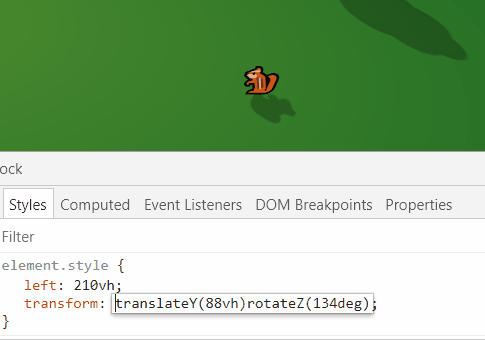
Browsers, OS, Devices
To avoid nasty visual glitches, I decided to degrade the visual quality on Firefox, MacOS and mobiles, by hiding all the shadows in the game (except the snake shadows).
I also made two versions of the intro (for Firefox and for the others: on Firefox the snake waits the end of the camera movement to get its head out of the ground, otherwise it's all glitchy) and two versions of the easter-egg animations (less zoomed on mobile and more zoomed on desktop, to ensure that everything is visible even if the mobile is held in portrait mode).
Moreover, on MacOS, the emoji have line-heights different than all the other OS's, so I added specific hacks to have the trees, apples and animals actually touch the ground.
Current size: 87.8kb unminified, 13.1kb minified and zipped. There are a few days left to add music and actually golf the code! Yay!
Trees fix!
Remember my problem of disappearing trees? Webkit browsers (Chrome, Safari, Android) don't like to draw trees exceeding a certain font-size in pixels, so I finally found the right solution. I made all the elements of my game almost two times smaller, and made the camera two times closer to the scene to compensate. It required a lot of edits (in CSS and in JS, especially the cinematics) but it worked like a charm. The trees appear about as big as before, but with a font-size technically two times smaller, they don't glitch anymore!
Lose weight!
The first attempt to lose bytes consisted in replacing all my classNames, ids and localStorage keys with one-char variables. It failed miserably (I forgot that in CSS, ids and classnames were case-insensitive, so my ".a" collided with my ".A", my "#a" with my "#A", and same problem for all the rest of the alphabet), so I reverted everything.
New tactic: rewrite my beloved puzzle editor, but much simpler, and reusing all the code of the game engine to resize the grid or move the snake. I also followed the idea of some beta-testers and removed the ability to draw a puzzle completely. Now to make a puzzle, you just have to place the snake as you want on the grid and click "share":
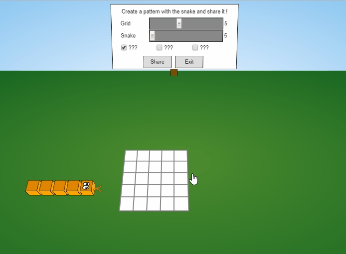
This editor rewrite saved 900b in my zip. (12.2kb)
(You may wonder why I talked so much about the previous puzzle editor if I removed it from the game... In fact, it's so handy that I decided to included it in the game's bonuses.)
After adding a bit of decoration and byte-consuming visual enhancements (especially for the "shiny wrap walls", the highlighting of the easter-eggs, and spawning a signpost after the first easter-egg to show where the exit is), finishing the puzzle editor, and making the 3D wrap puzzles walls solid after they're completed, nearly 800b were added to the zip size.
After putting all my code in a single file, removing more dead code, and retrying (successfully) to reduce the names of my ids and localStorage keys into 1 or 2 chars, I managed to save plenty of space.
I'm still very close to 13kb... and there's no music yet...
Week 5
Music!
As usual, Anders Kaare saved my life at the end of the last week-end of the compo, and he had a great idea: to play a melody that he composed, but play all the notes one by one, each time the snake moves! That's pretty original and works very well, with a very small overhead. Thanks a lot to him, and to McCoordinator who also kindly offered to make a music for my game. I'm keeping his prototypes and stay in touch for my next games! :D You guys rock too!
Anders shared a few details about how he made the two melodies of the game: (verbatim)
To clear things up (or scare you a little more, depending on how you react to dirty hacks explanations), each sound effect in the game, and each note of the melodies, constitutes a specific "wave shape", that is represented with 44100 floating numbers, per second and sent to the speakers.
For example, here are all the samples for the sound that I used to tell that a puzzle is completed, plotted. This ~150ms sound is made of 16000 floating-point samples! (full list here)
Of course, all these values are not stored in the game's code, but are computed procedurally, placed in a wav file that is created out of thin air, converted in base64'd and played on-the-fly with an Audio tag.
// mkaudio generates samples based on a function passed in parameter, creates a wav file and exposes a "play" method
function mkaudio(fn) {
var data = [];
for (var i = 0;;i++) {
var smp = fn(i);
if (smp === null) break;
data.push(smp);
}
var l = data.length;
var l2=l*2;
var b32 = function (v) {
var s = 0;
var b = "";
for (var i=0; i<4; i++,s+=8) b+=String.fromCharCode((v>>s)&255);
return b;
};
var b16 = function (v) {
var b = b32(v);
return b[0]+b[1];
};
var SR=48e3;
var b = "RIFF"+b32(l2+36)+"WAVEfmt "+b32(16)+b16(1)+b16(1)+b32(SR)+b32(SR*2)+b16(2)+b16(16)+"data"+b32(l2);
for (var i in data) b+=b16(data[i]*10e3);
return new Audio("data:audio/wav;base64,"+btoa(b));
}
P=Math.pow;
S=Math.sin;
function t(i,n) {
return (n-i)/n;
}
// Here's the "equation" for the win sound
function win(i) {
var n=1.6e4;
var c=n/7;
if (i > n) return null;
var q=P(t(i,n),2.1);
return (i < c ? ((i+S(-i/900)*10)&16) : i&13) ?q :-q;
}Demo:
(don't get me wrong, even if I can kinda explain what happens, this code is still black magic for me)
The demo/code of the melodies he sent me during the last sunday of the jam is available here.
By the way, no new sound effects were made this year, I just reused sounds that Anders had made for my 2016 entry (for example, the "win" sound above was used when a coin was collected in the previous game).
Add stuff, Minify, Golf, Zip, Advzip, Repeat! (and Screw you, Closure Compiler!)
After adding the music and sound effects, and compressing everything, I realized that my zip had reached a size of 13.4kb plus a few bytes. Pretty cool! The music and sounds really create an ambiance in the game and end up taking less than 1/2kb zipped!
However, something less cool occurred. My minified JS code was all buggy, because when Closure Compiler minified my code and renamed all my vars, it didn't rename them in my 44 setTimeout's and 7 setInterval's, in which the JS code was stringified. Ex:
var Song = () => { /*...*/ } // This function gets renamed as "A"
setInterval("Song.forward()",500); // After minification, the browsers throw an error saying "Song is not defined"Closure Compiler transpiles ES6 to ES5 but doesn't interpret strings passed to setTimeout and setInterval. I didn't know that and it was pretty annoying.
Even if it was a bit late, the solution was to spend a few hours rewriting all my intervals and timeouts using functions instead of strings... The most boring task was to use closures to be able to pass vars to the delayed/repeated functions when they're in for loops. Ex:
// Before
for(var i in apples){
if(applecanappear[i]){
setTimeout('top["apple"'+i+'].className="emoji apple"',800);
}
}
// After
for(var i in apples){
if(applecanappear[i]){
setTimeout(
function(i){
return function(){
top["apple"+i].className="emoji apple"
}
}(f),90
);
}
}Then, with the kind help of @kuvos, @veubeke, @AdrienGueret and @salvan13, I was able to gather 3 different ways to rewrite a "string interval" as a "non-string" interval. They're listed here.
After a pass in Closure Compiler, two of them are transformed to the same code. The last one becomes a closure. weird. But good to know.
As there was still a lot of bytes to remove, I continued my manual rewriting session, and renamed all the hardcoded classNames and ids as one or 2 chars, by following this rudimentary dictionary.
After a long rename/debug session, and after dropping a few useless signposts, I managed to fall below 13kb 15h before the deadline, only to realize later in the night that my editor was all broken, once again because of Closure Compiler:
Closure Compiler renames all vars, even if they're global, and even if they're declared as "top.varname = 1234;". But I still had dozens of places in my code where I had to call a variable by its id in the top object (ex: top["u"]), but Closure Compiler also didn't interpret that correctly. It renamed the original "u" but kept the top["u"] as-is. The solution was to "force" it to not rename these vars that are required in strings, by being more silly than it:
// Before
u=r=d=l=s=c=B=0;
// After
window["u"]=window["r"]=window["d"]=window["l"]=window["s"]=window["c"]=window["B"]=0
// Then after mnification, I paste the result in my min.html file, and replace the "after" snippet by the "before" one to save bytes.
Last warning: Closure Compiler adds line breaks in minified JS code. This is a good practice for real-life JS code, but for js13kgames, all these line breaks (75 in my case) can and must be removed.
Final scare
I submitted my game at 1h40 AM, less than 12h before the deadline, and went to sleep.
The next morning, I saw it online and tried it. All my "return to main menu" links were broken. Turns out, these links had a href="." attribute, and js13kgames.com didn't support that. So I renamed each "." in "index.html", and everything went back to normal after I sent an updated version to Andrzej at 9h30.
Final version of the game, after all the necessary hacks and renames: ~200h of work (including thinking + drawing + coding + beta-testing), 86.1kb commented, 80 global vars (including functions), 3175 lines of code, 41.6kb minified, 13300 bytes zipped and advzipped. Just 12b below the limit!
BTW, If you don't know advzip, it's a zip recompressor that optimizes any zip as strongly as possible. Without it, my final zip would have been over 13.4kb. A real life saver. How to use it.
Bonus
During my spare time, I prepared a bonus page, on my Github repo, where I could put all the levels I didn't include in the game, and all the levels shared on Twitter plus a link to this making-of / my Github / my Itch page, as well as the game credits, and a trailer and a video of my dev speedrun, recorded september 13 at 9h00, just before updating and sending my updated zip to Andrzej!
End of week 5 (mini-conclusion)
After the release, the game had super nice reviews from a lot of friends and strangers IRL, on Twitter and on Slack. Most of the other contestants really enjoyed the music (maybe because they know how hard it is to make music for a 13kb game, and they don't have the chance to have Anders as a magi-musi-cian).
Some people even told me that they had more fun with the interactive music than with the game itself, heh!
Anders didn't remember the name of the old song that inspired him the second melody of the game, but someone on Twitter found it!
I also went into each room of the game and counted all the HTML elements generated by my game's engine, and dumped all the HTML code generated in a single file.
I teased the result with this poll, then revealed the answer here: 7434 elements and 1.26MB of HTML is generated by my 13kb game! How crazy is that?!
So, I'm very happy with this year's game and by the people's reactions. It's the game I wanted to make when I started, and the lack of extra time only prevented me from trying to fix my code for a better result on Firefox, and on Safari Mac / iOS. Meh. These browsers are not ready for so much CSS3D and so many emoji anyway.
Week 7 (real conclusion)
Here we are, two weeks after the end of the jam.
More details!
First, let's address a few details that I forgot in the rest of the making-of, or dicovered afterwards:
- Surprisingly, many contestants didn't know the existence of localStorage and thought the only way to save/recover a game state was through cookies (or maybe cheat codes?). Most didn't even bother making multi-session games. On my side, I used localStorage, and I used it a lot. It may not be obvious, but I use localStorage to save a lot of metadata (desktop / mobile, time counter, moves counter, snake length, snake color, current room, snake position in the room, number of puzzles solved, puzzle editor features unlocked, ...) but I also use it to save the state of each door (open / closed), each apple (appeared / not appeared yet, eaten / not eaten yet), each puzzle (solved / not solved yet) and each mobile button (appeared / not appeared yet), for a total of nearly 200 different persistent items.
All these keys are deleted when we click "new game", except one: the key that says that the full puzzle editor has been unlocked. All these localStorage keys are prefixed with the string "lossst_", so I can easily delete just my keys, instead of just doing localStorage.clear(), that would also delete the saves of all the other games hosted on js13kgames.com.
For some reason, sometimes, the browser freezes when you click "new game" after the game over screen, but no JS error appears whatsoever, so the only solution is to kill and restart the browser before continuing. Welp. Who would play that game many times anyway?
PS: Gheja decided to use prefixed keys for his game after reading this making-of, and credit me! Cheers! - 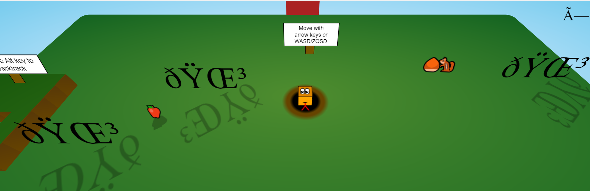Something fun happened when I pasted my JS code in a new, unique index.html file, encoded in UTF-8: most emoji suddenly broke.
Turns out, my new file didn't contain the famous <meta charset=utf-8> tag, and in order to avoid writing it, I converted my HTML file in "UTF-8 with BOM". This 3-byte prefix is enough to tell the browser to interpret the file in UTF-8 instead of windows-1252.
Later, this BOM also became useless due to Closure Compiler escaping every emoji in the JS source code (ex: "🍎" => "\ud83c\udf4e"). At first sight, it looks like I could have saved a lot of bytes by replacing every escaped emoji with the corresponding glyph, but in reality, I was too lazy, and moreover, it wouldn't have saved such a lot of space, because escaped emoji are in ASCII, and contain a lot of repeated characters (like "\ud..."), which makes their zip compression very efficient, contrary to their 3 or 4-byte equivalent glyph that gets almost no compression at all during gzip... plus the size of the BOM!
Speaking of emoji, at some point a few developers showed on js13k's slack a spritesheet of all the graphical assets they used in their games. Here's my (troll) answer:
- Due to the lack of time, and the chance that my zipped code didn't overflow the size limit too much, I couldn't really golf anything, I basically just relied on Closure Compiler, manual variable renames, zip and advzip to fit everything under the 13kb limit. Though, I really think the game could have been much much smaller with some extra efforts, like for example, storing the puzzles in binary instead of long strings of 0's and 1's, converting back all my code to ES6 (with arrow functions, template literals), converting back all my setTimeouts and setIntervals' arguments to strings, merging the two mkaudio() functions into one, etc...
- Speaking of music, you may hear some "clicking" after some of the notes, especially on Chrome (they're also present in the speedrun video). This clicking generally happens when a note is stopped abruptly during playback, but there's no reason for it to happen, especially on just one browser. Anyway, restarting Chrome and having no other sound playing on the computer at the same time generally helps fixing this issue.
- As you may have noticed, there's no sound on mobile, and I don't know why! Ander's demos work perfectly on mobile, but not in my game, even though each sound is triggered more or less directly by touch inputs.
Also, on some PCs (including mine), Firefox only plays the low-frequency notes and skips all the high ones. *shrug* ! - Remember the boolean golfing episode? Turns out the NXOR (a.k.a. XNOR) could be golfed even more than "if(!(A^B))", by doing "if(A^B^1)" instead, and as A and B were both booleans, we could just have used "if(A==B)". Thanks to Magna for this extra black magic (and for letting me know Karnaugh maps also existed for this particular need)!
- I may not have emphasized it enough, but I'm very happy that I managed to make a big, real 3D game, that also works on (good) mobiles, with cool graphics and sounds (the two most hazardy parts of my game, as they mostly didn't depend on me), without blocking on any technical problem (besides browsers bugs -_- ) for more than a couple hours. All the rest of the development went surprisingly smoothly, even if it took an awful lot of time (nearly 200 hours, if I count everything from thinking to coding, to beta-testing and to debugging). It doesn't mean I find my game perfect: for me, it still lacks a ton of details (like particles effects, more animations, different visual ambiances, smarter hints, etc...). And there's one point that I'm particularly not proud of: my build process. Here's a video showing all the steps required to generate the zip of my game from the commented source file. Yes, it's unbearably long, and I had to do that many times each day during the fifth week of development. Never again!
Anecdote: a colleague whose daily job is to automate every process in my company saw me do that one day, and almost exploded. Promise, I'll automate my build process next years! - Another thing I'm not proud of, is that this month of development was also a month of junk-food, and it made me gain not 13 kb, but 4 kgs. I'll be more careful next time!
- Finally, here's a fun fact, all the extra snake cubes are actually already present in the scene, and hidden below the ground. When the snake eats an apple, I just increment the variable representing the snake's length, and the game's engine will automatically handle one extra cube as if it was always there. This hack was much easier and less glitchy than redrawing all the snake at the right position, plus an extra cube, after each apple eaten. Here's how the intro looks with a transparent floor. You can see the cubes stock below the ground, and one cube "jumping" on the snake's tail when it touches the apple:
But how many cubes are there under the floor? Answer: just the right amount - there are as many hidden cubes as not-yet-eaten apples in each room.
In the puzzle editor though, the snake is entirely rewritten every time its size is changed. This wasn't mandatory, but it allowed better performances on bad browsers like Firefox, that don't handle very well having 30 to 40 useless 3D shapes below the scene. Also, in the editor, the snake can be shortened, which never happens in the real game. So overall, it was a bit easier to do like that, even if it used more code than a generic implementation.
Feedbacks
Before the results, I received A LOT of positive feedback on my game, I'm really impressed by the people's kindness and nice words to describe my game:
- "LOSSST - #js13k \ @MaximeEuziere Great game; nice puzzle ideas and a unique use of the emoji. My no 1 vote." - AndrewHS
- "@MaximeEuziere I hate you :P Some puzzles are so hard @_@ But I'll finish them all sooner or later!" - Mattia Fortunati
- "A fantastic game with unique mechanics, challenging puzzles, yet with very well balanced learning curve. 👏 Bravo, @MaximeEuziere!" - Subzey
- "The theatrics of this entry are so good: the opening, the little sounds that play on movement" - Logan Franken
- "This is such a really cool #js13k entry!!" - Matthew McCord
- "as ever, your entry is awesome! Both the idea and the engine are amazing! Great job!" - Mattia Fortunati
- "Bravo @MaximeEuziere il est vraiment top ton jeu ! 👏👏👏" - J.C. Chemin
- "super neat! great puzzle concept. fun emojis. something weird about the controls (can't press too fast) & the camera motion; still enjoyable" - Gaëtan Renaudeau
- "good job maxime! 👏🏻" - Kelly Hodgins
- "Wanted to quickly check this 13K JS game out, got immediately hooked :)" - Ates Goral
- "the game is amazing ! Well done it's impressive" - Cyril Moreau
- "allez un dernier .... aller encore un .... arrrrrrrrgh" - Cyril Moreau, 5 minutes later
- "Hey, EUZIERE I love your game. Thank you so much for that. The idea is great. And I think it's great that the music is as fast as you walk." - Sven Herz
- "I guess I found the glitch ;) Thanks for the game, I love what your puzzles require from my brain cells :)" - Bartek Szopka
- "tu t'es gavé!" - Amaury Beauzac
- "very cool game! quite polished and long :)" - Anders Kaare
- "Still amazing what you can accomplish for 13k competition with limited size" / "It's easy to understand, fun to play and it's really good combination of easy and hard puzzles" / "almost threw my laptop from balcony while doing last puzzle before entering door 21" - Nicoloz
- "excellent ton jeu! bravo !" - Ange Albertini
- "I thought that was super clever. It's a puzzle game but has a bit of adventure thrown in. Love it @xem!" - Ryan Malm
- "played Lossst yesterday, when saw the warping i was like: what. dude, what. Oh, and the one step one note music is really fun, really like it" - Gabor Heja
- "Can I get a link to that cool lookin snake game?" - mccoordinator (august 20)
Feedbacks about this making-of
- "Sometimes, you feel like a "front end dev", then sometimes you read an article like that, and your day to day life feels like a scam." - Amaury Beauzac
- "This is a super fascinating peek behind the scenes at how a browser-based game is built using JavaScript, HTML, and CSS!" - Tommy Hodgins
My first shootout !
Ryan Malm (a.k.a. Rybar), the dude (and friend) who arrived first in the desktop category with the game Greeble, added a shout-out to me and other golfers who helped him during the development of his game, in his game over screen!
So shout out to him too! If you haven't done it yet, go check out his game!.
Custom puzzles
Nearly a dozen players finished my game at 100% (congrats!) and some players even solved the bonus puzzles (including the glitchy ones), and created very cool custom puzzles. Some of them were hard to solve, even for me! You can find them here: #LOSSSTlevels.
I also couldn't resist the urge to create 26 bonus puzzles representing all the alphabet, because these kind of puzzles were pretty fun to design for the easter-eggs. So now, the bonus page contains 26 "hard-ish" letter-shaped puzzles!
With all the in-game puzzles, and all the bonuses, I designed a total of 111 puzzles for this game!
miniMusic
At least one entry (Polyhedron Runner, by Alex Swan, one of my favourites this year) actually used miniMusic for its theme! Woohoo!... but he had to hack the code to be able to play the melody repeatedly, as Webkit doesn't like when we create more than 6 AudioContexts. The solution is to reuse the same over and over, and destroy it between each use.
I'm gonna enhance this tool and make it more dev-friendly before the next game jam!
Speedrun!
I progressed on the game's speedrun, and managed to beat the game in 742s and 2266 moves. These scores will be the final dev times appearing on the game over screen (I included them when I sent a litte bug's hotfix to Andrzej a few days after the end of the compo).
It's far from perfect: I did a few mistakes during the run, and the route could be simplified for some puzzles solutions (Jupiter Hadley's solution for one of the first puzzles of the game was much easier than the one I used, though I had never thought of using this solution before I saw her video:
Jupiter Hadley's video test
You can see the video test of LOSSST by Jupiter Hadley (one of the judges, and indie game expert) here, at 9:49
I'm also present at the beginning of this compilation video made by one other judge, Agar3s.
Thanks!
Jam results!
They're finally here, and they're very good!
Community awards (I'm #2):
Twitter specials (I'm #1):
Mobile awards (I'm #1):
Desktop awards (I'm #2):
Here are the lovely judge's feedbacks on my entry's page:
I really liked the comparison with Braid, and the typo at the end (the music is synced to whaaaat?)
Here are some kind messages I received from after the results:
- "Congrats on second place! I really enjoyed your entry!" - James Wright
- "Congratulations on second place Maxime You did a great job and you really earned the second place." - Sven Herz
- "GG Max!!" / "c'est mérité le jeu est ultra bon!" - my colleagues
- "Beautiful!" - Agar3s (one of the judges)
- "well deserved dude ! Try LOSSST guys, if you love puzzle games, will be your best/worst friend today :)" - Cyril Moreau
- "I totally agree, LOSSST is great! The idea, the puzzles, the music :) With some tweaks it can become a bigger title for a wider audience!" - Mattia Fortunati
- "Keep being awesome!" - McFunkyPants (one of the judges)
- "y'a un super concept. Faut absolument que tu le portes sur iOS, Android & Steam. Tous ceux à qui je l'ai montré ont KIFFE" - re Cyril Moreau
- "Where’s the app though? ;)" - Veubeke
- "Time to port it to Aframe 😜 your game has potential and iterations will make it even better :)" - Marc Guinea
- "Congrats! I really enjoyed playing your game!" - Thunraz
- "For sure I enjoyed it! I've already started some of the letter levels you posted, looking forward for further developments/releases :)" - re Mattia Fortunati
- "That's the best puzzle I've played in ages, you should push it further. Congrats =)" - Fernando Meyer
- "Truely awesome for a js13k entry. Greedle is technically impressive too, but I beat it in 3 minutes compare to almost 3 hours for LOSSST. As a coder, I find more value in Greedle, but as a gamer, yours is #1 by far. LOSSST has great gameplay, creative ideas, details in mechanics, progressive difficulty, and CSS3D camera is 💯. I played LOSSST 3 hours in a row and never got bored. Such depth is very rare for a code golf, it felt like a game I could pay for" - Sylvain PV (+ thread)
- "I could never design the mind-bending puzzles in your game or cram as much content in as you do on top of a level editor. I take my hat off to you sir." - Ryan Malm (Desktop category winner)
- "Dude, btw, I'm really amazed, for reals, your game is the one changes the way of thinking. Much like the "tetris effect"! That's none of my business, but… Maybe you should polish it a little and submit it into Steam" - Subzey
- "Looking forward to play Lossst on the AirConsole" - herebefrogs
Mattia Fortunati also praised my mini canvas framework and LOSSST in his writeup about A day in the life!
The jam results also had a lot of success on Hacker News, where I found these feedbacks about LOSSST:
- Some of these are really impressive. There have been several surprises where the developer(s) went the extra mile in ways that are surprising. Like in Lossst, when finishing a level, it'll zoom the camera to the next door and back to the worm. It's amazing that someone working within such a tight limit can think, "I know, we'll do this nice zooming thing which has no real relation to game play but will feel nice!" - SwllJoe
- "Uses ALT for a crucial move, ALT triggers my browser's menu. Got stuck. Quit." - Aw3c2 (ಠ_ಠ)
- "I just played Lossst and was sure it had been made with WebGL... I couldn't believe my eyes when I realized the author used divs and css transforms for everything. I really had no idea how much can be done with just css3." - pagnol
Thank everyone! Anders Kaare, the testers, the players, everyone who helped me, the judges, and Andrzej. You're all fabulous!
What's next?
First, I'm gonna adapt this entry for AirConsole, and present it to their upcoming game jam. (I "just" moved the mobile controls into a separate page that communicates with the game with WebRTC messages). Here's how it looks in AirConsole's simulator:
And on real hardware (a bit laggy but enjoyable. It even works with two players, controlling the snake together):
And then?
It seems clear that this game deserves some kind of further development, and by chance, I have a ton of new ideas that couldn't be implemented during the compo!
I'm currently gathering people and ideas to work on something much bigger, yet still based on this basic pattern-matching schema.
I don't want to spoil you the surprises , but I'll still leave you with some food for thought...
What if...?
What if the black and white tiles were not just square?
What if the puzzles were not just placed on flat surfaces like floors and walls?
What if the snake had more than one color?
What if there was more than one snake?
The answers to these questions, and probably many others, may be coming on Ssssteam or on an App Sssstore near you in 2018!
Until then, take care and don't forget to support both arrow keys, WASD and ZQSD for keyboard controls!
Week 12
PS: we just received some great stats from Andrzej: the 100 most visited pages since august, and the 500 most visited pages since 2012.
LOSSST and all my/our previous games performed very well!
The 100 most visited #js13kgames since august 13
— xem 🔵 (@MaximeEuziere) 18 octobre 2017
- LOSSST is 2nd (7372 visits)
- Super Chrono Portal Maker is 48th (368)
cc @sqaxomonophonen pic.twitter.com/aFOuFPNwYd
The 500 most visited #js13kgames pages since 2012:https://t.co/bhXS4ZkJ5x
— xem 🔵 (@MaximeEuziere) 20 octobre 2017
Awesome! All my/our entries are here! :D@sqaxomonophonen @subzey pic.twitter.com/z6HvxGhSNf
Andrzej also told me that:
- I was showing your game at our local meetup on Tuesday, and people were seriously impressed - when I told them it ended up 2nd in overall they were like "whaaaaa? who's 1st then?", plus when they saw the post mortem it was mostly "dude, I need a free month to read that, it's so cool!"
Cheers!
xem